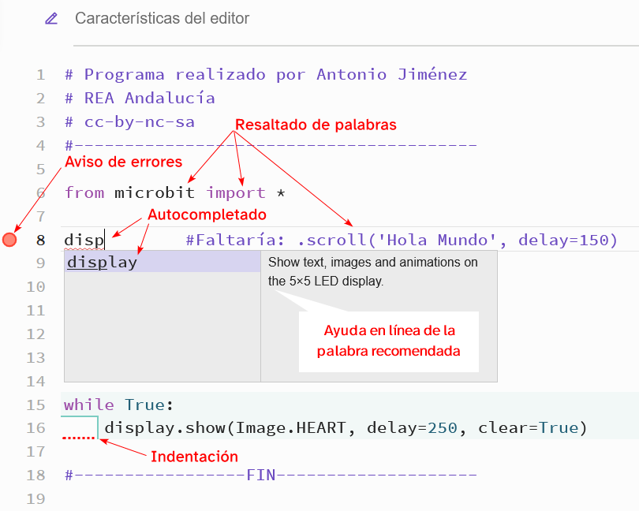

Ha llegado el momento de conocer el editor de código que vamos a utilizar para crear nuestros programas.
A continuación os presento un material gráfico que os va a resultar muy sencillo y fácil de seguir.
¿Cómo accedemos?
Para acceder a la página principal de micro:bit debéis hacer clic aquí.
En la siguiente imagen podéis ver los elementos más importantes. Se ha añadido un número para que sea más fácil identificarlos.
Haz clic para ampliar la imagen
A continuación os voy a explicar todos los números que aparecen en la imagen anterior:
- Empieza. Aquí encontraréis información muy interesante para empezar. Como por ejemplo:
- Primeros pasos.
- Guía del usuario.
- Aprendizaje en casa.
- Proyectos. Aquí podéis encontrar ejemplos de proyectos explicados paso a paso.
- Enseñar. Espacio para tu profesor o profesora.
- Vamos a programar. Como indica su nombre, desde aquí podéis acceder a los diferentes lenguajes de programación. Los más interesantes son:
- MakeCode editor. Editor de programación con bloques.
- Python editor. Editor de programación con texto. Recordar que nosotros vamos a utilizar este modo de programación.
- Impacto. Descubre historias inspiradoras de otros alumnos y alumnas del mundo.
- Comprar. Aquí aparecen multitud de colaboradores que venden material de robótica.
- Noticias. Espacio dedicado a las últimas noticias sobre la micro:bit.
- Aprende más. Desde aquí podéis acceder a toda la información sobre el editor de código.
- Da tus primeros pasos. Os enseña todos los pasos que debéis seguir para empezar a programar.
- Idioma. Aquí podrás seleccionar el idioma con el que te sientas más a gusto.
- micro:bit. Desde aquí volverás a la pantalla inicial.
Editor Python
Este nuevo editor viene con muchas mejoras, gracias a ellas vuestro trabajo será mucho más fácil.
En la siguiente actividad interactiva encontraréis la información más importante acerca del editor.
En la imagen encontraréis dieciocho números que indican diferentes elementos o zonas del editor. A cada número se le ha asociado un punto interactivo, haciendo clic en él podréis acceder a la información.
A continuación, te muestro toda la información de la imagen anterior:
- Micro:bit. Desde aquí podrás acceder a la página de microbit.org.
- Referencias. Desde aquí puedes explorar el lenguaje Python y las características de tu micro:bit. Por ejemplo:
- Variables (uso de las variables).
- Pantalla (diferentes formas de usar la matriz de LEDs).
- Botones (ejemplos de código para usar los pulsadores A y B).
- ...
- Ideas. Aquí podéis encontrar proyectos que os pueden servir de inspiración. Además, puedes reutilizarlos.
- API. API, Interfaz de Programación de Aplicaciones. Es un conjunto de código que facilita la programación. Podemos encontrar:
- gc, podemos gestionar la memoria de nuestros programas.
- log, permite gestionar un historial de datos con la micro:bit.
- machine, utilidades de bajo nivel.
- ...
- Proyectos. Desde aquí podrás definir tus proyectos.
- Ajustes. Puedes acceder a:
- Idioma, te permite cambiar el idioma. Por ahora, en inglés y en francés.
- Configuración, puedes personalizar el editor.
- Buscar. Permite buscar contenido dentro de las pestañas: Reference y API. ¡Cuidado!, debes escribir la palabra completa.
- Contraer/Desplegar. Permite aumentar el espacio de la zona de trabajo.
- Nombre del proyecto. Aquí podemos cambiar el nombre de nuestro proyecto.
- Zoom. Podemos hacer zoom+ para acercar o zoom- para alejar.
- Hacer/Deshacer. Permite hacer o deshacer los últimos cambios.
- Enviar a la micro:bit. Permite enviar nuestros programas a la microbit, es importante seguir los pasos que nos indican. También debes saber que con el navegador Mozilla Firefox se pueden dar problemas de vinculación.
- Guardar. Desde aquí podemos guardar nuestro proyecto en el ordenador. Esta opción es la recomendada.
- Abrir. Permite cargar un programa desde nuestro ordenador.
- Zona de trabajo. Aquí podemos escribir nuestro código.
- Simulador. Simulador de la placa micro:bit. Gracias a él, podemos comprobar inmediatamente el resultado de nuestro programa.
- Consola serie. En esta ventana podremos realizar el seguimiento de los cambios en una o más variables.
- Modificación de parámetros. Cuando activamos el modo simulación de la placa micro:bit, desde aquí podremos modificar parámetros externos como:
- El nivel de luz.
- La temperatura.
- Posición de la brújula.
- Nivel de ruido.
- Pulsación de los botones.
- ...
Características del editor de código
Nuestro editor de código posee unas características muy interesantes que nos van a ayudar a escribir nuestros programas.
En la siguiente imagen se indican con unas flechas rojas.

A continuación os explico cuáles son las características:
-
- Aviso de errores, el editor nos avisa cuando escribimos un error en nuestro programa.
- Resaltado de palabras, cuando el editor reconoce una palabra, dependiendo de la función que desempeñe, le cambia el color de letra.
- Autocompletado, esta característica es muy importante. Cuando escribimos una palabra que el editor reconoce, éste nos ofrece una palabra recomendada y al pulsar enter se escribirá de forma automática. Además, nos ofrece una ayuda en línea de la función que desempeña dicha palabra. En la imagen superior intentamos escribir disp y el editor nos ofrece la palabra display.
- Indentación, es el desplazamiento de un bloque de texto a la derecha. En la figura puede verse cómo debajo de while True: el texto está desplazado a la derecha. Esto significa que dicha línea de código pertenece al bloque while True:
 Como ya sabes, necesitamos programar nuestra placa micro:bit con un lenguaje de programación.
Como ya sabes, necesitamos programar nuestra placa micro:bit con un lenguaje de programación.